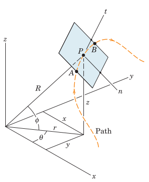
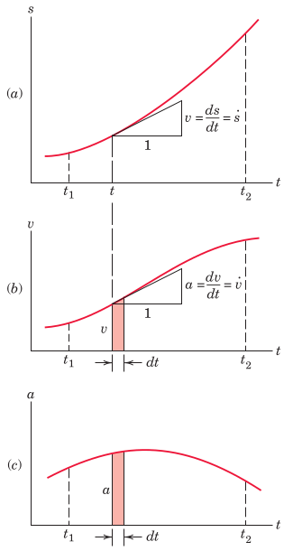
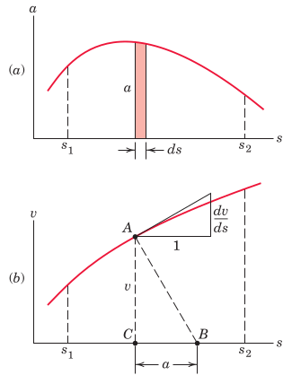
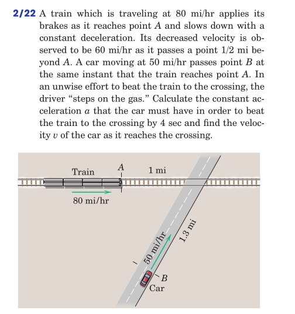

rectilinear motion
Particle Kinematics
2025-09-30
Table of Contents
1. Particle Kinematics
2. Rectilinear Motion
3. Examples
4. Review
1.
Particle Kinematics
kinematics is the study of …
1.1.
Bodies, Particles
Bodies may be regarded as particles when …
1.2.
Motion Measurements
1.2.1.
Linear pathways
Needs
a clock
a ruler
determine amount displacement and the time passed
1.2.2.
Curved pathways

1.3.
Coordinates
Cartesian:
Cylindrical:
Spherical:
Curvilinear ??
2.
Rectilinear Motion
Define motion
use the limit concept from calculus
velocity
acceleration
establish a differential relating \(s\), \(\dot{s}\), and \(\ddot{s}\)
2.1.
Graphical Interpretation
2.1.1.
Time-domain plots

2.1.2.
Phase plots

3.
Examples
3.0.1.
Problem 2.22 (
the book
)

4.
Review
From
the book
: Chapter 2.2, Problems